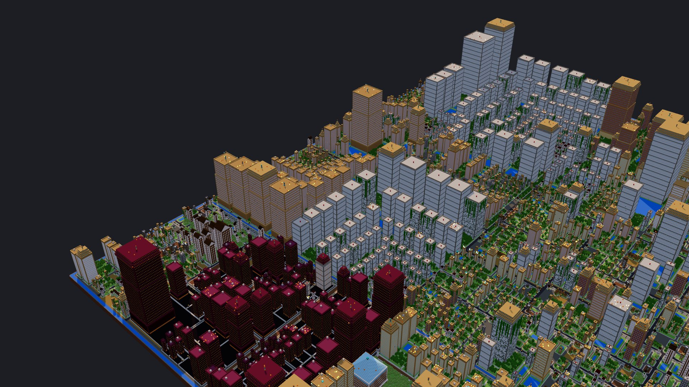
repoville
Walk your codebase.
Repoville turns any Git repository into a city. Folders become districts, files become buildings, busy code burns, TODOs crumble and forgotten corners grow moss.
Runs locally · MIT · React (7,165 files) renders in 2 s
Real repos, real renders
Pick a city and walk in.
Every picture on this page is a screenshot of the actual viewer. Click one to open the city; each is a single HTML file that also works offline.
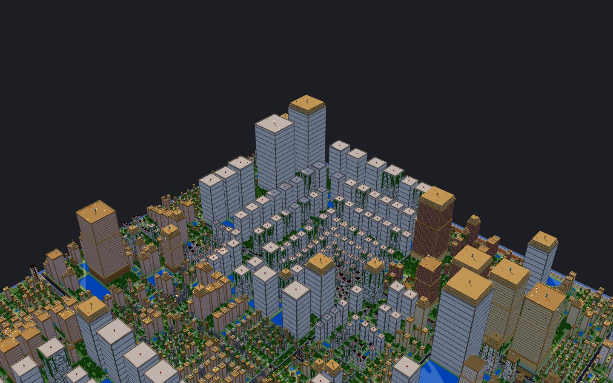
walk it →facebook/reactJavaScript · 7,165 files · 3,294 buildings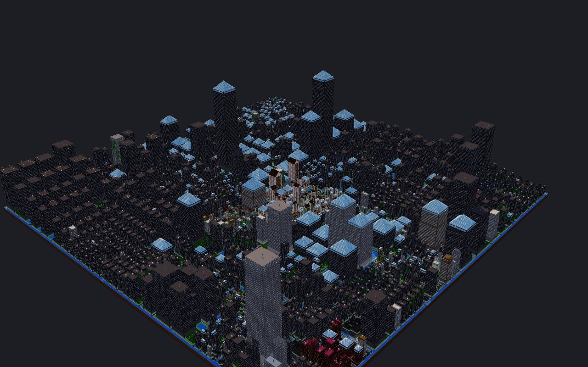
walk it →torvalds/linuxC · 95,948 files folded into 3,986 buildings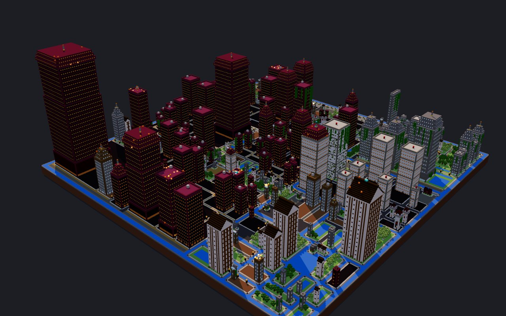
walk it →BurntSushi/ripgrepRust · nether district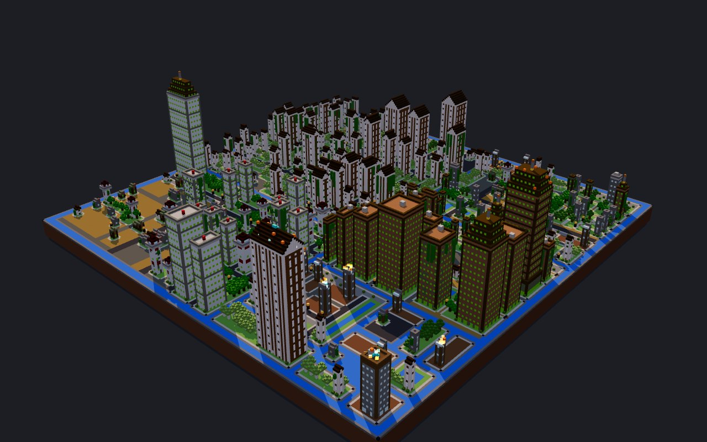
walk it →pallets/flaskPython · jungle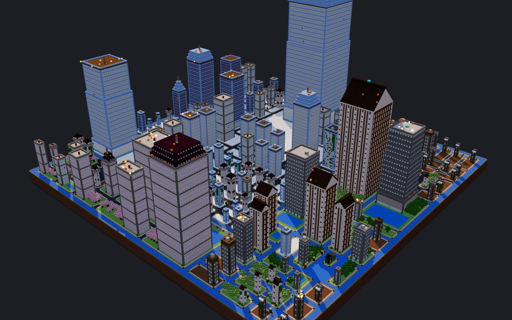
walk it →junegunn/fzfGo · frozen peaks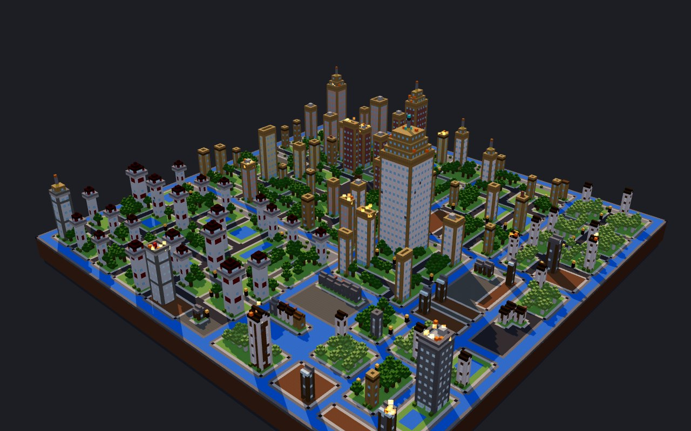
walk it →repovilleTypeScript · this projectLook closer
Pixel-perfect up close.
Every block carries a 16×16 pixel texture drawn by Repoville itself. Prefer the original look? Turn on Minecraft textures in the viewer and your browser loads them at runtime. Drag to compare.
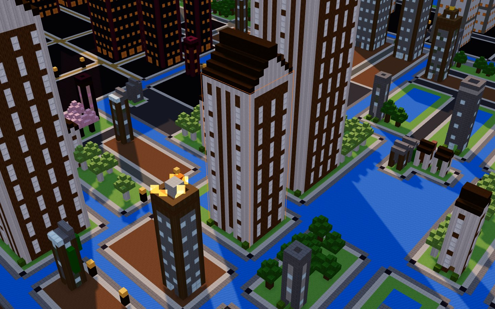
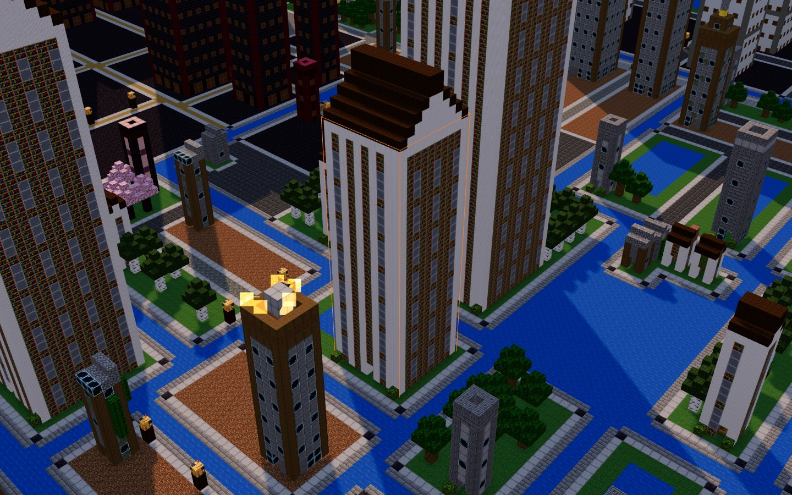
Repoville texturesMinecraft texturesMinecraft textures © Mojang. They are fetched from a public mirror when you switch them on and are never bundled with Repoville.
The legend
Every block means something.
The city comes from your files and your git history. Same commit in, same city out.
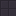
Folders → districts- Nested folders become nested districts with roads, plazas and name signs. Top-level folders are islands between canals.
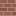
Files → buildings- Height is
4 + 4·√(lines/10), capped at 250. Small files are houses, big ones towers; the largest file of each folder wears a gold crown. - Churn → fire
- The 10% most-changed files of the last year burn on the roof; the top 2% get soul fire.
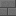
TODOs → ruins- The share of TODO/FIXME/HACK lines becomes the share of cracked and cobwebbed wall.
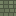
Untouched → moss- Files without a commit for over a year grow moss and vines.
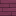
Language → theme- TS/JS plains, Rust nether, Python jungle, Go frozen peaks, Java badlands, C/C++ deep caves, Ruby cherry grove.
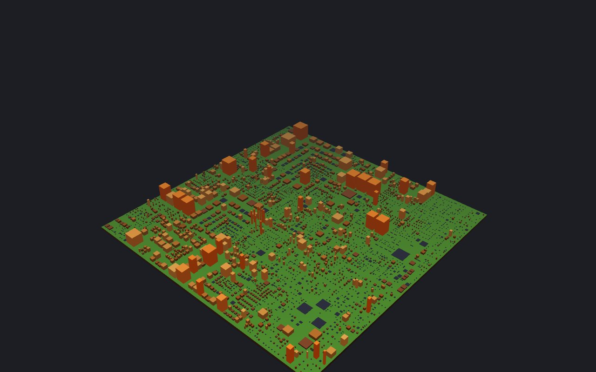
- Fire is activity, not bad code. Busy files are often the most important ones.
- Moss is age, not rot. Stable code nobody needs to touch is a good sign.
- The numbers are one click away. Every building shows lines, commits, last change and TODO count, and the metric view swaps the city for plain columns.
Take it into the game
Then build it for real.
The same city exports to Minecraft Java Edition, or builds itself on your server. Every format below is tested against a real Paper 1.21.11 server or an independent reader.
.schem
Sponge v3 for WorldEdit. Pasted and block-checked on Paper.
tested · WorldEdit.litematic
For Litematica. Round-trip checked with litemapy.
tested · litemapyworld.zip
Creative superflat world with the city at spawn.
tested · Paper 1.21.11live
Builds on a running server over RCON, no plugin needed.
tested · Paper 1.21.11Run it on your repo
One command, nothing uploaded.
A local folder, owner/repo or any git URL. The npm package is coming; until then run it from source (Node 22+).
Local analysisLines and git history are read on your machine. No upload, no telemetry.
Paths and counts onlyThe city file holds file paths and numbers, never file contents.
Nothing runsRepoville never executes code from the repos it renders.
# from source $ git clone https://github.com/maximilianfeix/repoville $ cd repoville && npm ci && npm run build $ node dist/cli.js facebook/react --open 7,165 files · 903,811 LOC · 3,294 buildings hottest districts (commits in 1y): packages/react-devtools-shared/src: 125 commits wrote html repoville-out/facebook-react.html # add the badge to your README $ node dist/cli.js badge
What does your repo look like?
Open a demo, then try it on your own code. If you enjoy it, a star helps other people find it.